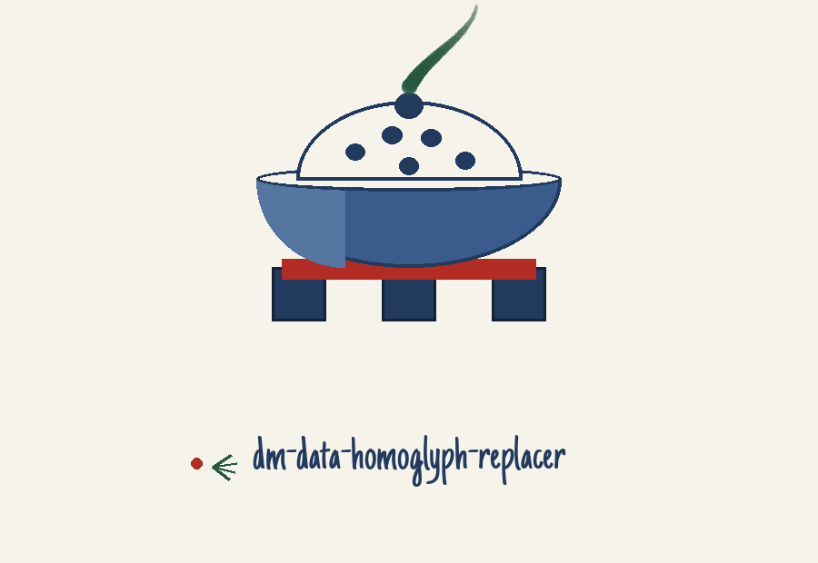
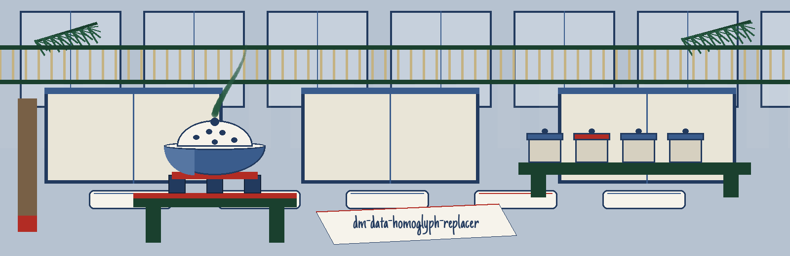
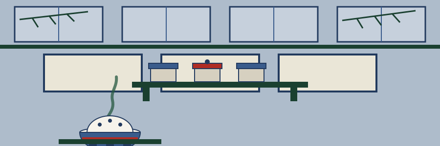

dm-data-homoglyph-replacer: Heian Court Incense Judging
Wherever this site gives its own name, it uses the joined form dm-data-homoglyph-replacer: Heian Court Incense Judging, repository first, theme second. The page walks the judging ceremony as a procession of rounds, one compound at a time. This theme entry is partial, and the parts of this page built from its surviving fragments are reconstruction, flagged here in plain view rather than dressed as complete guidance.



Output File
Round one: the errand
Characters inside delicate wording are exchanged for visually kindred homoglyphs, so the wording stays legible at a glance while the underlying value ceases to surface openly. Usernames and URLs are the dwellings the README cites. Logs and demonstrations are the occasions it cites: masking material in logs, and demonstration material where complete obfuscation overshoots the need yet direct values should not be shown. The tool belongs with software that generates or masks sensitive data with realistic looking but meaningless values.
Round two: fetching, with a mended address
Mended. git clone https://github.com/ShadowGuard-AI/dm-data-homoglyph-replacer
The line above is an amendment, labelled a mend. The address printed inside the README fuses the organisation into one unbroken word, and a guest obeying it literally would arrive at a residence that does not exist. The mended instruction gives the organisation name with its hyphen, as it stands today. Nobody dresses it as the printed original.
Round three: the shape of an invocation
./dm-data-homoglyph-replacer [params]
That contour is all this round exhibits: executable foremost, square bracketed parameters trailing. The emptiness around it is intentional. No username appears here, no URL, and no character specimen of any description.
Round four: the switches in README order
Help foremost: the switch -h shows the help message and exits.
A Flag the README Does Not Explain
Afterwards the switch -p, exhibited precisely as the source exhibits it, bearing its printed gloss: No description provided. Site memorandum, in plain view: the README glosses this switch in no other corner, so this site says no more about it than the source does.
Afterwards the destination switch -o: it designates the output file the masked data is written into, and if not specified, the outcome prints to stdout.
What the Source Does Not Say
This README prints no behavior notes whatsoever, and this round says so in so many words. No refusal regulation is documented. No substitution tally is documented. No failure exit is documented. A guest requiring those answers is told the answers are absent from the source, instead of receiving fabricated ones costumed as documentation.
Round six: two copyright facts, kept apart
Ahead stands the repository document itself: MIT License, its holder conveyed purely by silhouette: a pen name foremost, afterwards a bracketed given name trimmed to its lone initial, the handle bringing up the rear. The wording of that line is not reproduced and the initial is not opened.
Behind it, explicitly tagged a site correction, stands the README parting sentence respelled with the current hyphenated organisation in place of the fused spelling the printed sentence uses: Copyright (c) ShadowGuard-AI. Site correction.
The preserved README record
 # dm-data-homoglyph-replacer Replaces characters in sensitive data (like usernames or URLs) with visually similar homoglyphs to obscure the original value while maintaining readability. This is useful for masking data in logs or for demonstration purposes where complete obfuscation isn't needed but direct values shouldn't be shown. - Focused on Tools designed to generate or mask sensitive data with realistic-looking but meaningless values ## Install `git clone https://github.com/ShadowGuardAI/dm-data-homoglyph-replacer` ## Usage `./dm-data-homoglyph-replacer [params]` ## Parameters - `-h`: Show help message and exit - `-p`: No description provided - `-o`: The output file to write the masked data to. If not specified, prints to stdout. ## License Copyright (c) ShadowGuardAI